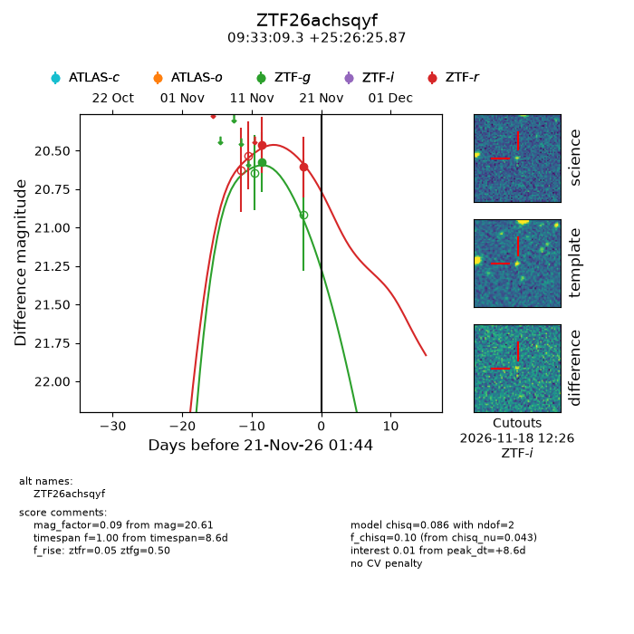
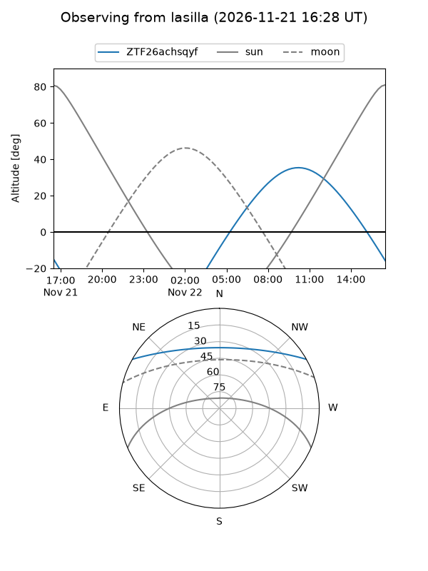
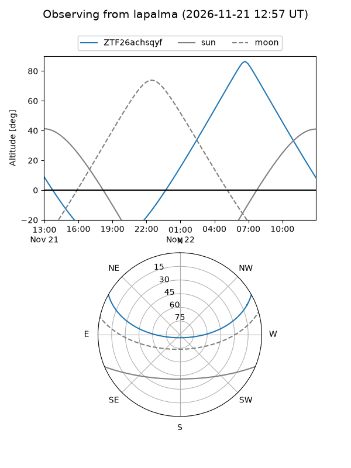
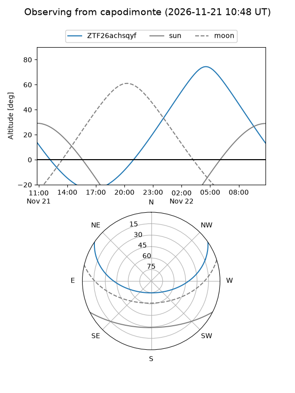
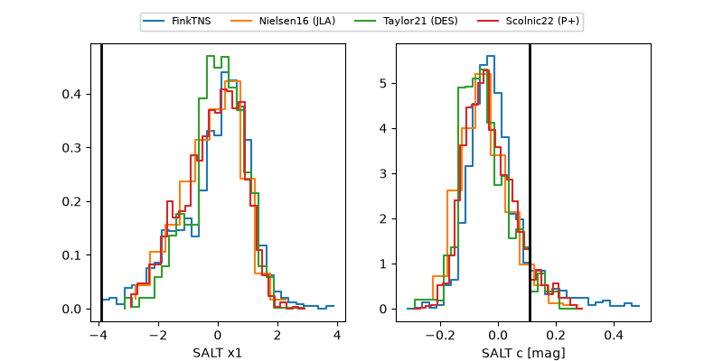

ZTF26achsqyf
Target ZTF26achsqyf at 2026-11-21 13:40
Aliases and brokers:
FINK-ZTF: ztf.fink-portal.org/ZTF26achsqyf
Lasair-ZTF: lasair-ztf.lsst.ac.uk/objects/ZTF26achsqyf
ALeRCE-ZTF: alerce.online/object/ZTF26achsqyf
Direct TNS query: direct search
alt names
ZTF26achsqyf (ztf,fink_ztf)
Coordinates:
equatorial (ra, dec) = 143.2886,+25.44052
equatorial (HMS+DMS) = 09:33:09.26,+25:26:25.87
galactic (l, b) = (203.4116,+45.81353)
Flags:
peak dt: +9.1
Photometry:
last ztfg=20.58, ztfr=20.61
1 ztfg, 2 ztfr detections
Lightcurve

Visibility



Additional plots
